CentOS 5.11 VM Install¶
These screen shots were created by installing the CentOS 5.11 ISO in a VirtualBox VM. There are a few differences in the screens you will see when installing on real hardware, but they are easy to figure out.
VM Setup¶
Create a new VM, and set it up as a ‘redhat 32-bit Linux’ system. I gave the primary hard disk 40GB (dynamically allocated), and configured two network adapters. This is necessary to run through the complete ICOM software setup process.
CentOS Installation¶
Start off by booting the machine with the OS install media installed. On real hardware, you need to access the BIOS and configure the boot device to match the media you are using. I used a USB DVD drive to set up the gateway servers.
When using a VM for testing, attach the ISO file to the CD/DVD drive. This is
done by opening up the settings menu and selecting the Storage
option. You will navigate to the ISO file and set is as the virtual DVD.
When the boot process starts, you should see this screen:
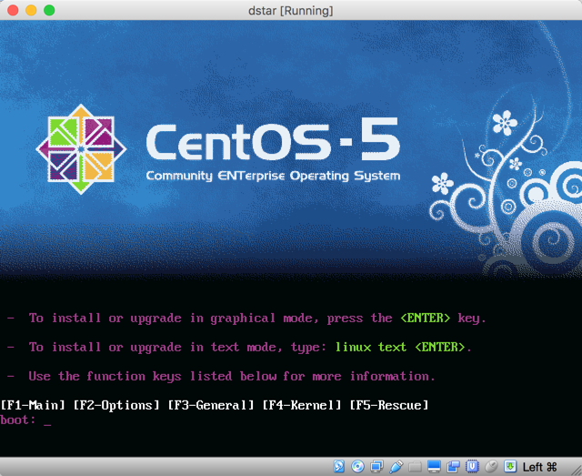{kind=link}
Press “Enter” to start the installation:
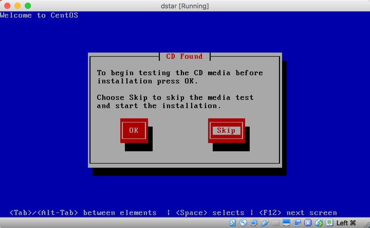{kind=link}
You can check your media if desired. Most of the time, just select “Skip” and continue.
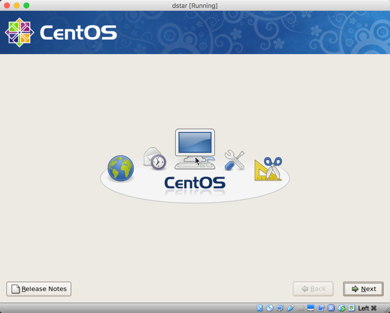{kind=link}
Click on “Next” on this screen.
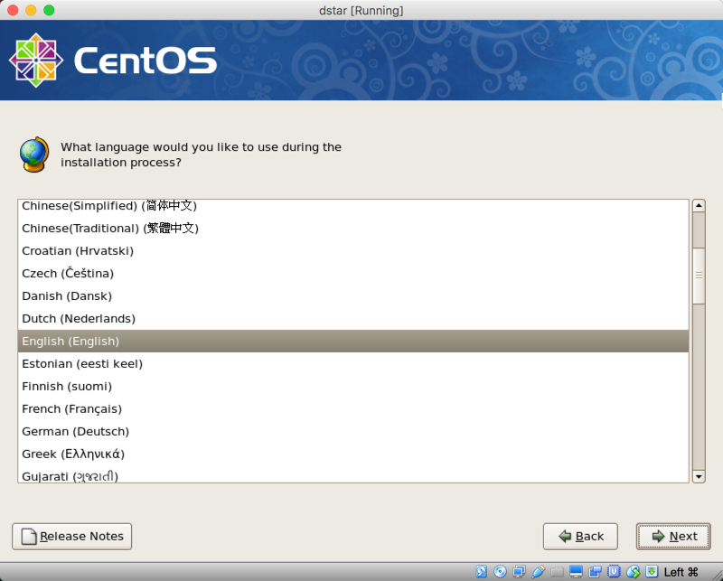{kind=link}
You probably want to use “English” as your language. Click “Next” after making this choice:
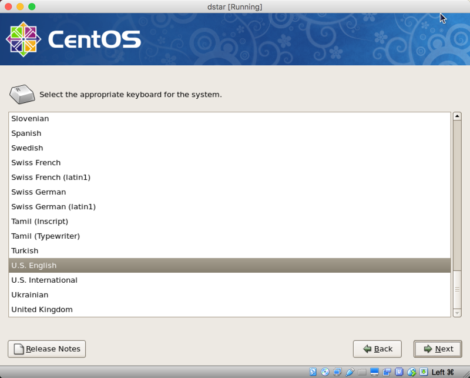{kind=link}
The keyboard should be “U.S. English” as well. Click on “Next”
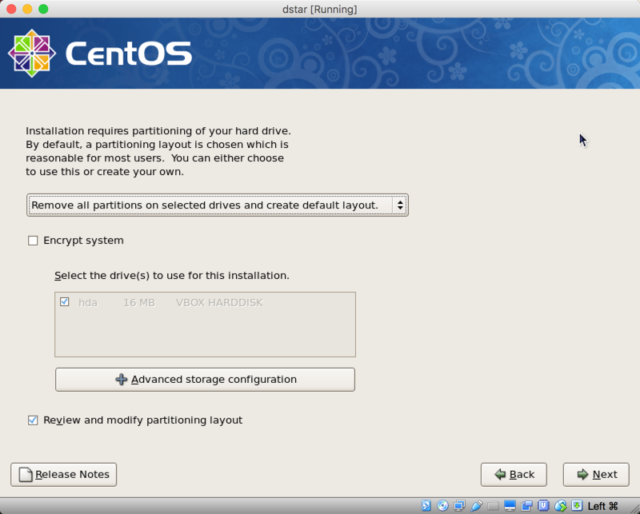{kind=link}
On this screen, you select the partitioning scheme to use on the primary hard disk on the system. The normal selection is shown. We remove any partitions on the disk and let the installer set up the partitions.
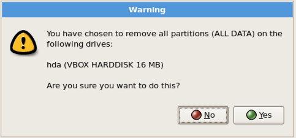This is a warning, confirming the partitioning choice. Click on “Yes” to continue.
The next screen will let you configure the network adapters. There should be two network devices present. If testing with the VM, you need to activate the second adapter before booting the system.
You will click on the “Edit” control for each adapter to configure them. Make sure the “Activate on Boot” check box is selected for both adapters.
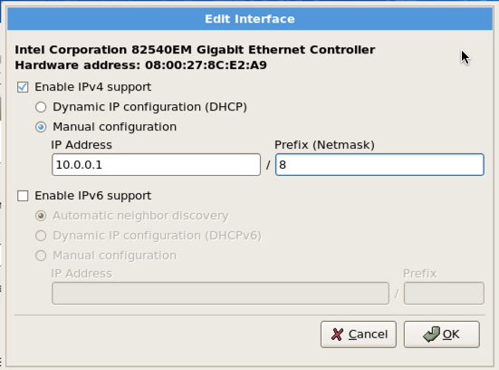{kind=link}
The primary adapter (en0) needs to be configured with a static IP address
of 10.0.0.1, and a netmask of 255.0.0.0. Enter /8 in the “Prefix” field as
shown here.
{kind=link}
The secondary adapter (en1) is also set with a static IP. The address here
is 176.16.0.20, and the prefix is “/8”.
Note that I disabled IPv6 support on both adapters.
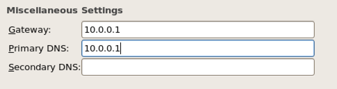{kind=link}
On this screen, we configure the IP address of the gateway on this network. This will be the IP address of the router, which needs to be set to 10.0.0.1. The primary DNS entry should be 127.0.0.1 since we will be running a name service on the gateway server.
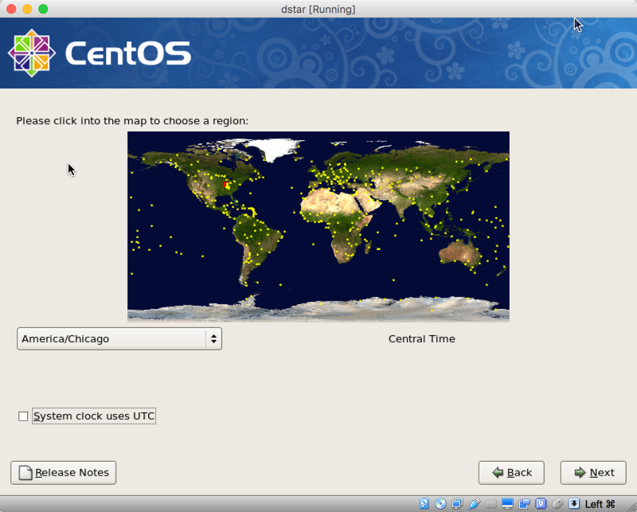{kind=link}
Next, we set the appropriate time zone. For Texas this should be “America/Chicago”.
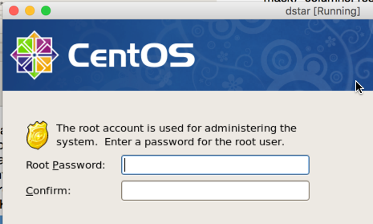{kind=link}
You will need to set a root password for the server. In normal use, this
account should not be used, so keep this password private. Administrators
should be set up with sudo access, and use their personal accounts to work
on the server.
{kind=link}
On this screen, we start installing the default software. Since the gateway system is going to be a server, I selected the “Server” check boxes here. At the repeater site, the GUI interface will be available. Off site, administrators will access the server using a terminal interface.
Select “Customize now” so we can add a few packages.
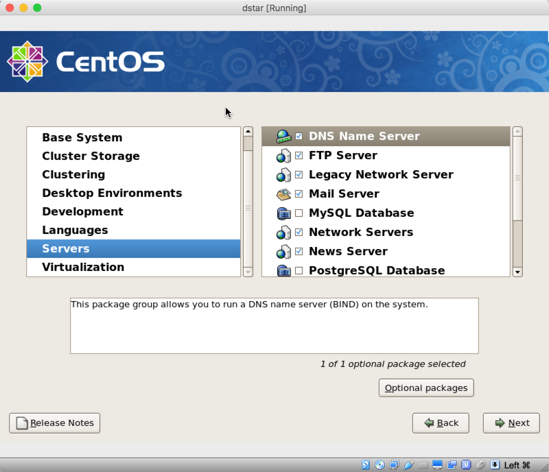{kind=link}
For now, all we need to install is the DNS Name Server found under the “Servers” menu. All other software is installed using the ICOM DVD.
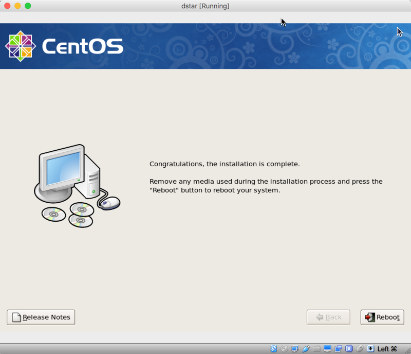{kind=link}
After the default software is installed, the basic OS installation is complete. The system needs to be rebooted at this point to finalize the initial setup.
On the actual gateway server, make sure to remove the DVD and set the server to boot normally from the primary hard disk.
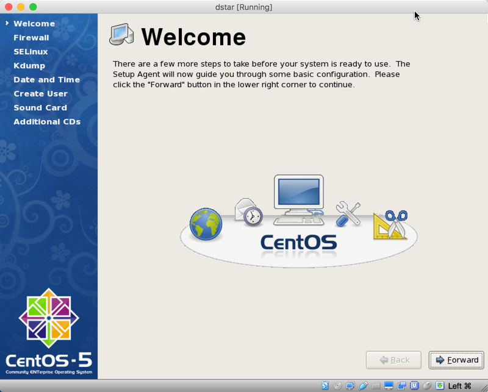{kind=link}
Say “hello” to the new OS. Click on “Forward” to continue.
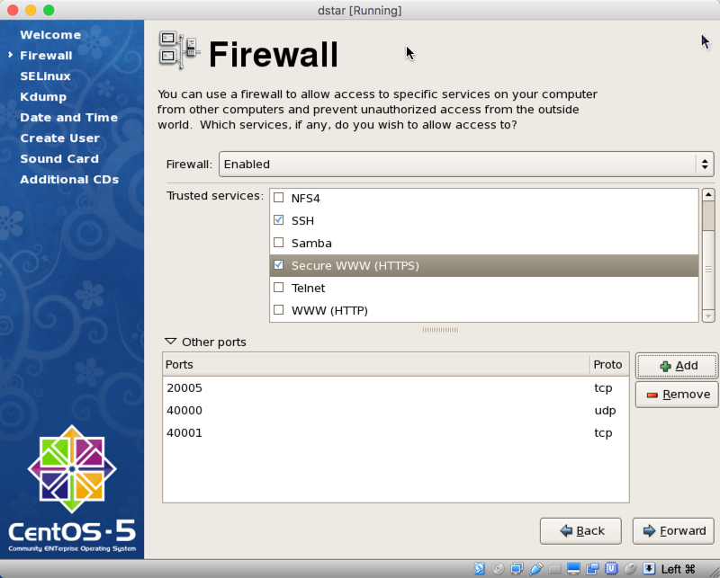{kind=link}
We need to configure the Firewall to allow controlled access to and from the server.
On the first part of this screen, we need to allow SSH and HTTPS. Under “Other Ports” you need to configure three additional ports:
- 20005 (TCP)
- 40000 (UDP)
- 40001 (TCP)
Click “Forward” to continue
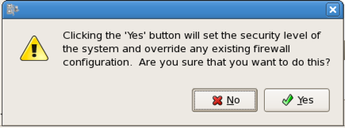This popup is a warning that you are about to activate the Firewall with new settings. Click “Yes” to move on.
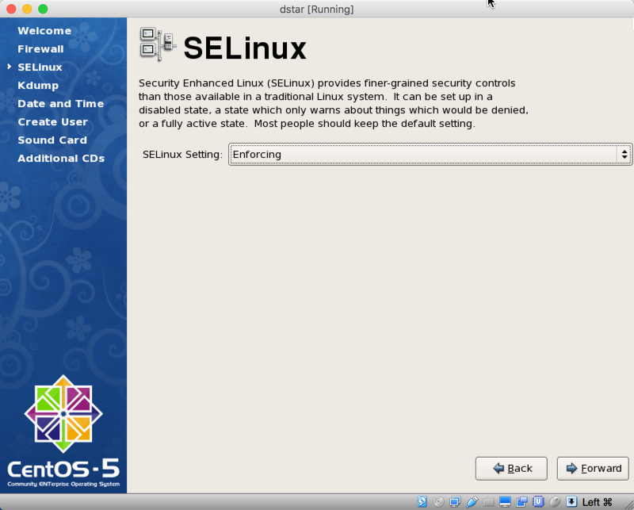{kind=link}
This screen tells you the Firewall is going to be activated. Click “Forware” to continue.
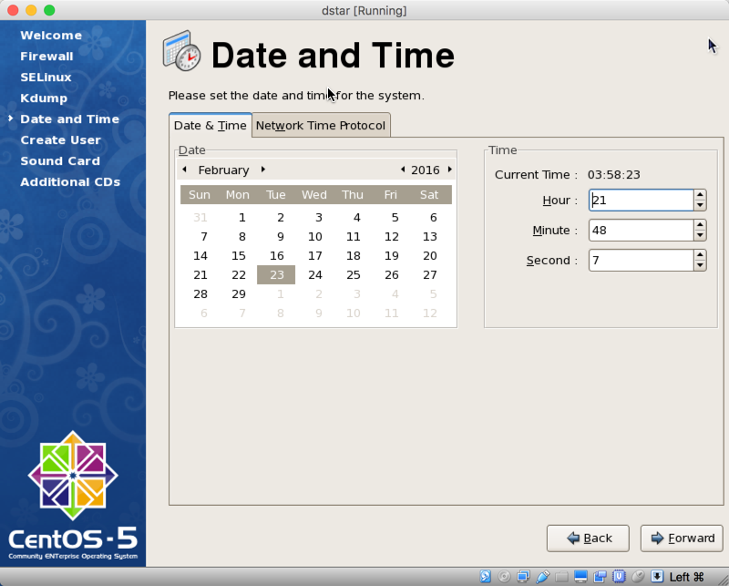{kind=link}
On this screen, we set the system clock. We will add NTP support later to keep this accurate.
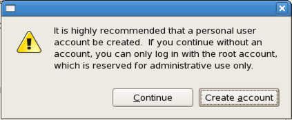{kind=link}
Finally, the system offers a n opportunity to add a new user. I use this screen
to enter my personal credentials, which I will use as an administrator. Later,
I will add this new user to the list of users with sudo permissions. Click
“Create Account” to set up a user.
{kind=link}
Enter the user name. On D-Start servers, administrator accounts should use Amateur Radio call signs as user names.
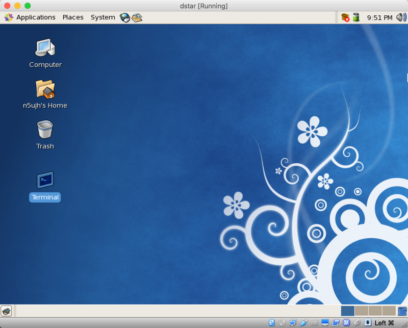{kind=link}
This completes the installation. At this point, the system will let you log in normally. I used my new user account and got to this screen. The first thing I do here is add the “Terminal” icon to the screen. You can do this by clicking on “Applications/Utilities”. Do not click on the “Terminal” icon, instead, click and drag the icon to the desktop. This is the normal display I see when working directly on the gateway servers.
Final Steps¶
Before ending this process, check that you can access the server using SSH.
$ ssh n5ujh@10.0.1.204
The first time you do this, you will be asked if you trust this server. Say “Yes” and you will be asked for your system password. Enter that and you should see a normal terminal session prompt.
Congratulations! Your server is now ready for installation of the ICOM software!